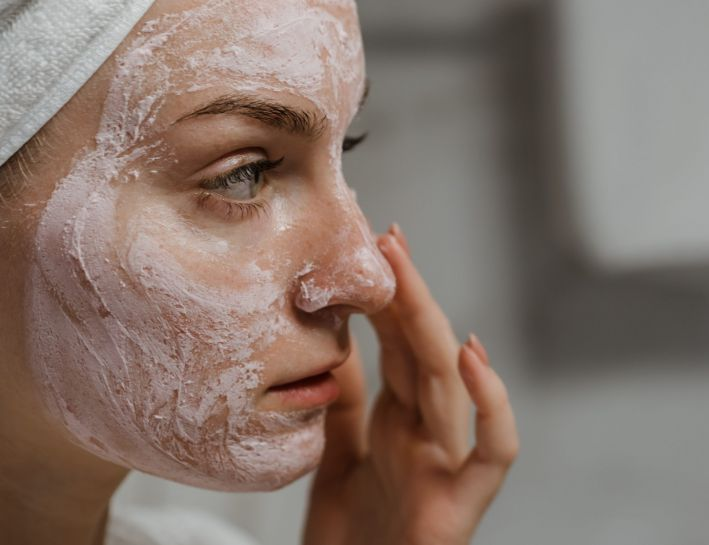
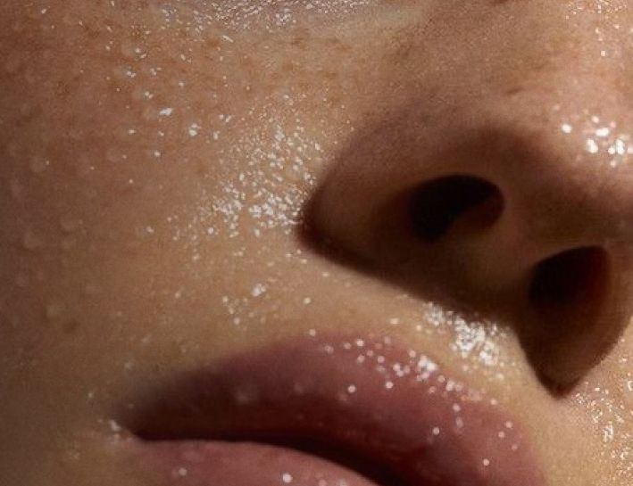

ДЕМАКІЯЖ: ПРАВИЛА ТА ОСОБЛИВОСТІ ЗНЯТТЯ КОСМЕТИКИ

Багато жінок вважають демакіяж рутиною, яку можна пропустити. Косметику часто знімають перед сном, коли
сил на
ретельний
догляд за шкірою не залишається. Здавалося б, що нічого страшного не станеться, якщо один раз поспати з
макіяжем.
Однак
шкідлива звичка швидко стає постійною, призводячи до проблем зі шкірою і прискорюючи старіння.
Бруд на обличчі глибоко забивається в пори, стаючи причиною виникнення комедонів. Не змита на ніч
косметика сприяє
появі
прищів та розширенню пір. Очистити шкіру від макіяжу краще відразу після приходу додому, щоб вона вільно
«дихала».
Вночі
клітини дерми відновлюються активніше, тому обличчя обов'язково має бути чистим. Крім того, на
забруднену шкіру не
діють
креми, сироватки та інші засоби для догляду за обличчям.
Демакіяж: особливості правильного очищення шкіри
Щоденний макіяж – важлива частина життя будь-якої жінки. Для підтримки краси та здоров'я важливо
вибирати якісну
косметику, яка не викличе негативних реакцій на шкірі. Перед урочистою подією самодіяльність не є
бажаною. У салоні краси BLOOM майстри мейкапу роблять святковий макіяж на
будь-який захід. Досвідчені візажисти використовують якісні
засоби від надійних виробників і гарантують приголомшливий результат.
Після закінчення робочого дня чи свята не час розслаблятися. Головне – вчасно та правильно видалити
косметику перед
сном. Демакіяж має свої етапи очищення за зонами:
губи;
очі;
обличчя.
Насамперед вологим ватним диском від краю до центру губи знімається помада або тинт. Після цього
змиваються тіні у
напрямку до скроні. Вії очищаються від коріння до кінчиків. Зручно розділяти ватяний диск на дві половини:
одну
підкладати під вії, а другою стирати туш зверху. Після очищення очі обов'язково потрібно вимити водою.
Професійні візажисти знімають макіяж з лиця вздовж масажних ліній. Засіб, що очищає, рівномірно
розподіляється по шкірі,
а через кілька секунд ретельно змивається теплою водою. Якщо з першого разу видалити забруднення та
косметику не
вдалося, краще повторити процедуру.
У жодному разі не можна будувати щоденний догляд на вмиваннях однією водою або використовувати мило
замість спеціального
засобу для демакіяжу. Рідина без спеціальних компонентів, що розчиняють, не здатна прибрати залишки
косметики. Це
призводить до закупорки пір та виникнення подразнень. Мило може серйозно порушити баланс шкіри через свій
склад, а також
спровокувати лущення покривів.
Основні правила грамотного демакіяжу
Для правильного очищення дерми необхідно дотримуватись ряду нехитрих правил. Насамперед: вибирати
відповідні засоби для
очищення шкіри обличчя. Зняти тонко нанесену тональну основу можна міцелярною водою
або тоніком. Більш товстий шар
косметики можна забрати за допомогою гідрофільного масла. Для очей потрібен спеціалізований засіб, склад
якого підходить
тонкій ніжній шкірі.
Змиваючи косметику, не потрібно натискати чи сильно розтирати обличчя. Це викликає почервоніння, розширює
пори та
розтягує дерму. Умивання проводиться за кілька секунд після нанесення засобу, щоб діюча речовина встигла
розчинити
косметику. Вода не повинна бути надто холодною або гарячою. Оптимальна температура, при якій відбувається
очищення та
тонізація – 25°С.
Після водних процедур обличчя не можна розтирати рушником. Це травмує ніжну шкіру і негативно позначається
на її тонусі.
Краплі води акуратно збирають тканиною, що вбирає. Рушник варто частіше міняти, оскільки у вологому
середовищі швидко
розмножуються бактерії. Альтернативні методи видалення забруднень можна використовувати, але виключно в
екстрених
випадках. Вологі серветки не очищають дерму настільки якісно, як це робить умивання зі спеціальними
засобами для
демакіяжу.

Види засобів для зняття макіяжу
Виробники засобів для демакіяжу використовують різноманітні інгредієнти, а також формули для досягнення
максимального
ефекту. Пори очищаються продукцією різної консистенції та інтенсивності, яка відрізняється за способами
застосування.
Зняття макіяжу проводять такими засобами:
міцелярна вода – найпоширеніший варіант із подвійним впливом на шкірні покриви. Не містить алергенів та ПАР,
підходить
чутливій дермі, одночасно очищає, тонізує покриви. Для нанесення використовується ватяний диск. Змивати
засіб не
обов'язково;
молочко – використовується аналогічно міцелярній воді, проте вимагає додаткового зволоження, а також
живлення тоніком
після процедури. Молочко для демакіяжу використовується для сухої, комбінованої та нормальної дерми;
двофазні засоби – мають пінисту структуру, м'яко видаляють бруд, а також косметику. Підходять для будь-якого
типу шкіри.
Складаються із двох компонентів різної щільності, тому флакон потрібно потрясти перед використанням. Засіб
наносять на
обличчя на кілька секунд, а потім змивають косметику обережними масажними рухами. Після застосування
обов'язково
вмиватися чистою водою або використовувати тонік для обличчя;
гідрофільна олія – має поживні властивості, знімає подразнення, підходить для шкіри з підвищеною чутливістю,
сухістю.
Наноситься по кілька крапель на чисті руки, після чого втирається в шкіру, змивається теплою водою;
пінка або мус для вмивання – використовується при жирній, схильній до висипання шкірі. Завдяки пінистій
структурі легко
наноситься на обличчя, акуратно видаляється;
гель – створений для вмивання комбінованої жирної дерми. Пом'якшує, глибоко очищає пори. Після застосування
нерідко
порушується рН шкіри, але обробка тоніком легко усуває проблему.
Правильно підібраний засіб здатний освіжити обличчя, підтримати здоров'я дерми, та забезпечити молодість на
довгі роки.
Демакіяж вибирають за типом шкіри, зручністю нанесення та особистим уподобанням. Важливо пам'ятати, що
очищати шкіру
обличчя потрібно щодня вранці та ввечері навіть у ті дні, коли обличчя відпочиває від косметики.